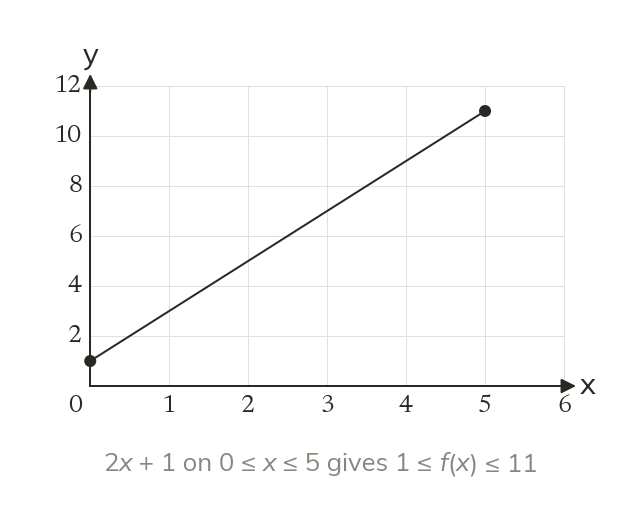
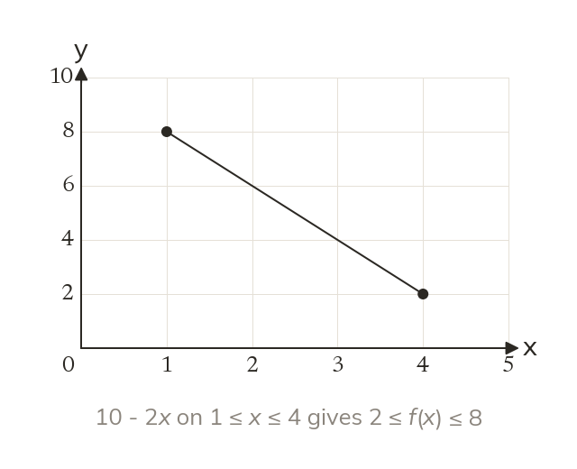
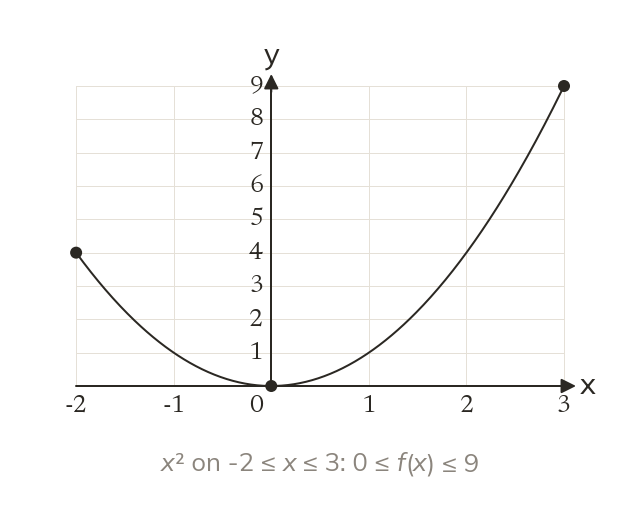
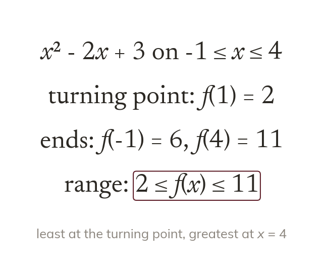

Fewer inputs, fewer outputs
A limited domain allows only some inputs. The range then comes only from those inputs.
Many functions only make sense for some inputs, such as a phone's charge over the first hours. Today we find the outputs a limited set of inputs produces, and why a graph's turning point matters.
Work down the page at your own pace. Write every answer in your book first, then click to check it.
Read each card, then follow the worked examples one step at a time.

A limited domain allows only some inputs. The range then comes only from those inputs.

A decreasing line is highest at its left end. The range is still written smallest first.
Pick an answer. If it's wrong, the feedback tells you which mistake it was.
Read each card, then follow the worked examples one step at a time.

A quadratic's lowest output is at its turning point. When that lies in the domain, it bounds the range.

The greatest output is at an end of the domain. So compare both ends with the turning point.
Pick an answer. If it's wrong, the feedback tells you which mistake it was.
Finished? Next lesson: 11H.9.4 Piecewise Functions.
Log in, then search for a code to practise that skill.
Videos, worksheets and more on each part of this lesson.